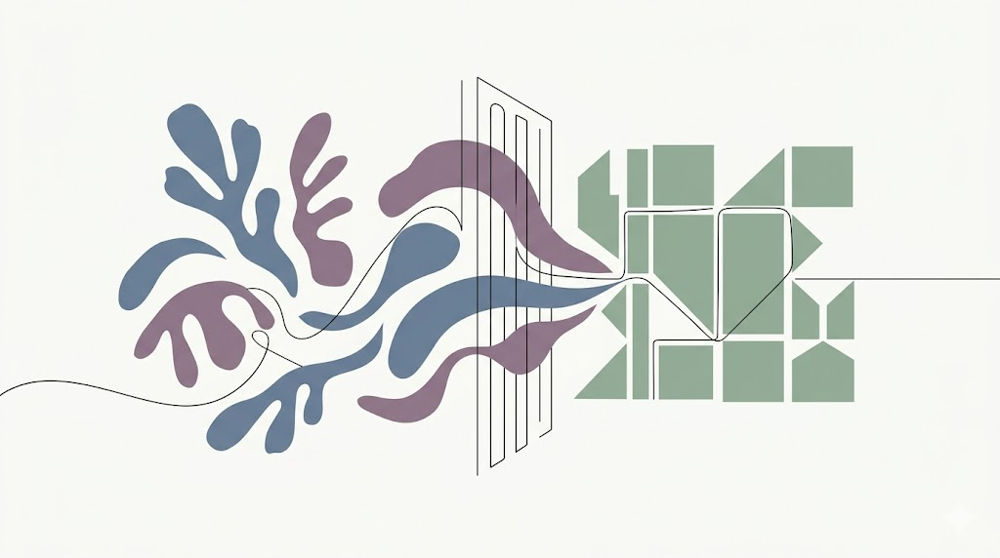
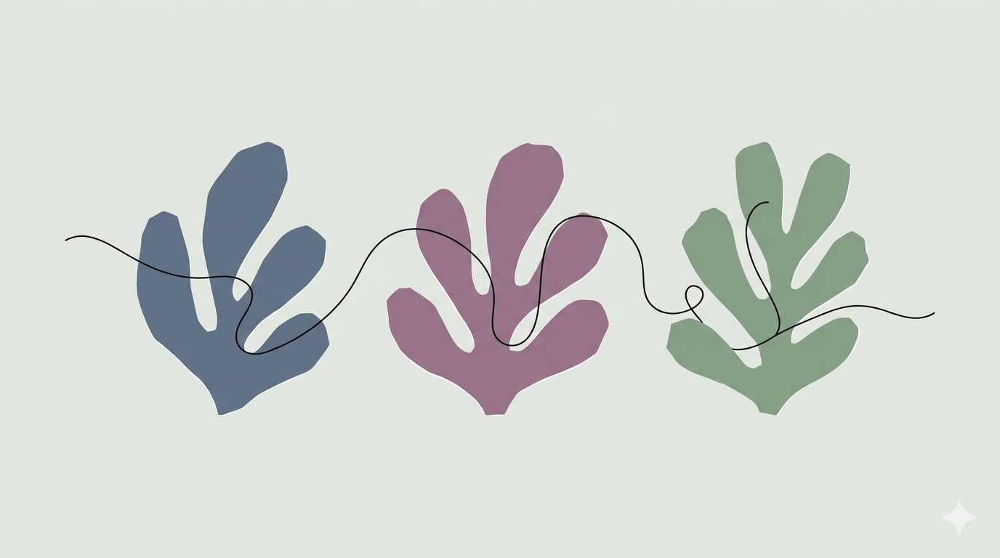
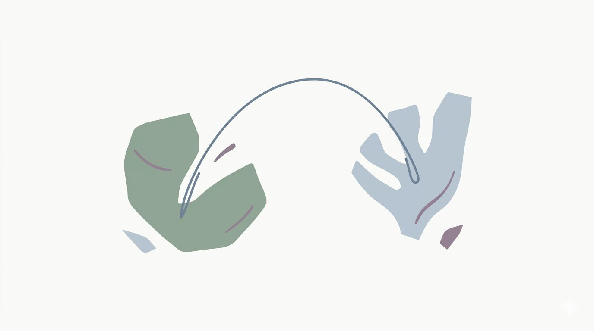
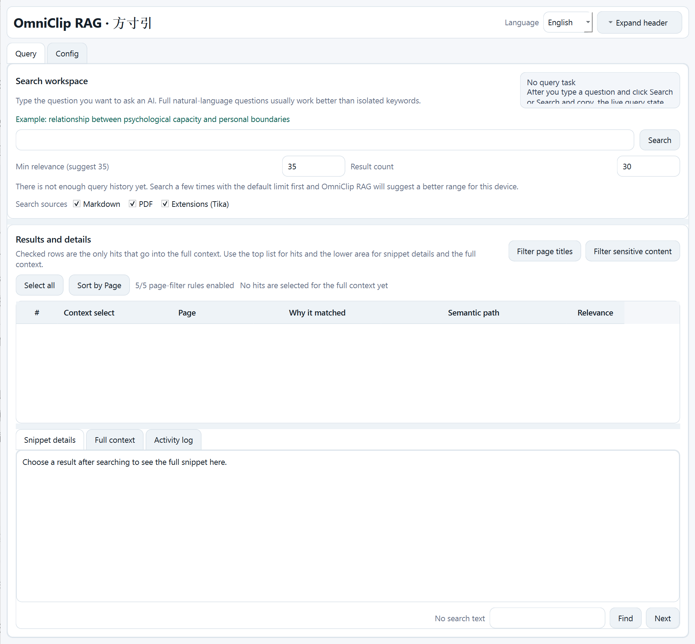
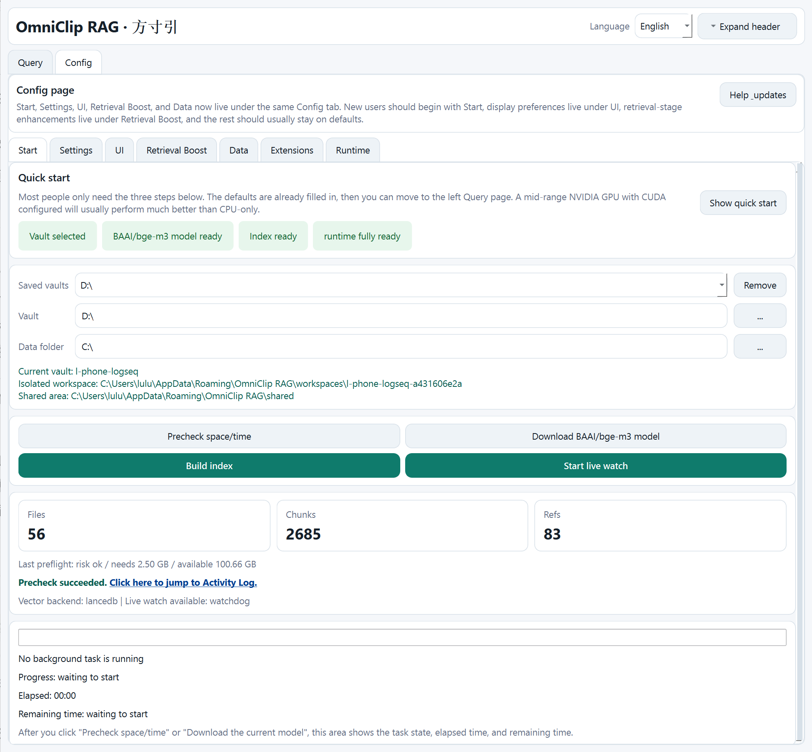
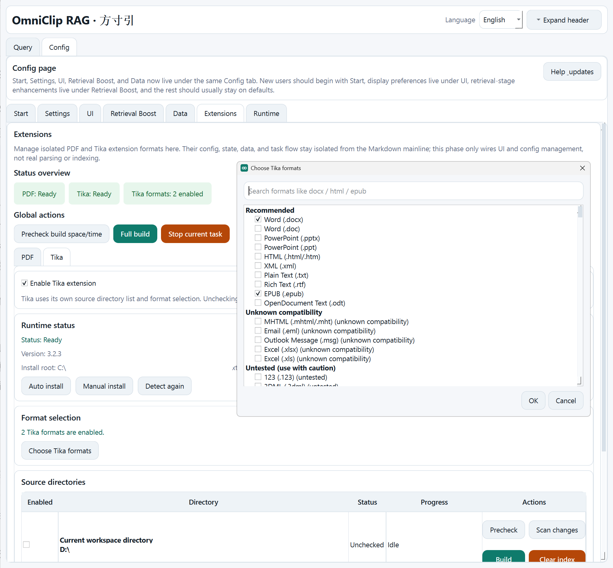
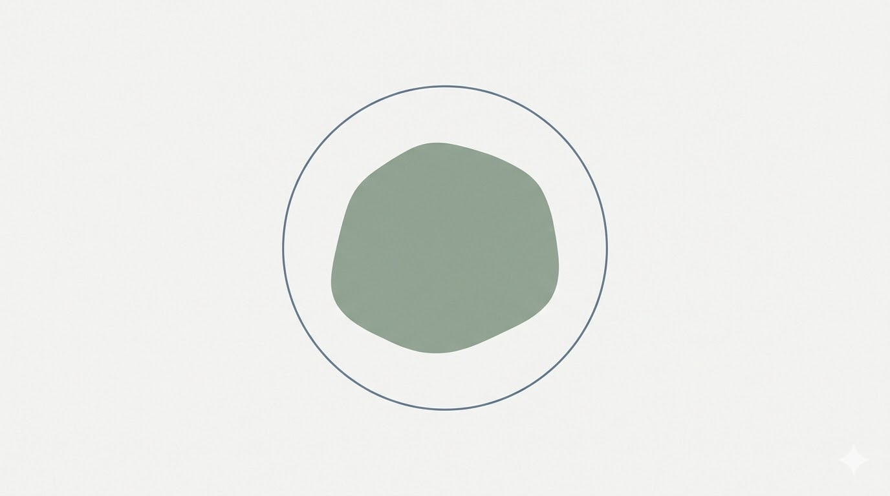

Law I
One local core. One read-only line.
Law I
One local core. One read-only line.
Law II
The archive never leaves. Only the fragment does.
Law III
For long-note minds crossing models.
Core Logic
Retrieve. Cite. Release with restraint.

The field stays local. Only the chosen slip leaves.
One read-only core, whether touched by desktop or MCP.
One corpus. Different minds at will.
Workflow
Build context from evidence first. Reason later.

Point the vault. The field forms quietly.
Ask once. Receive cited fragments.
Send the fragment. Keep the archive home.
MCP Orbit
A read-only stdio line out. Fragments may travel. The archive does not.
The native route for Registry-speaking MCP clients.
The fallback route for executable-minded clients.
State first. Fragment second.
Read the MCP Spec
Control Plates
Quiet in the background. Transparent at the surface.




Trust Boundaries